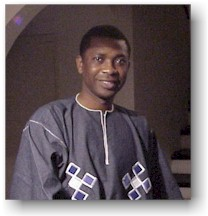
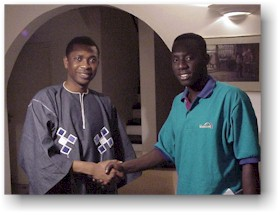
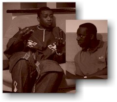
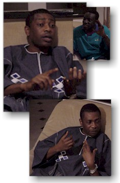
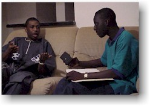
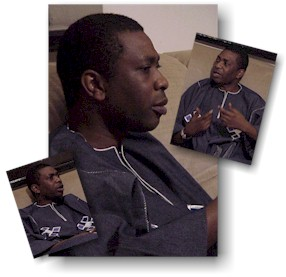
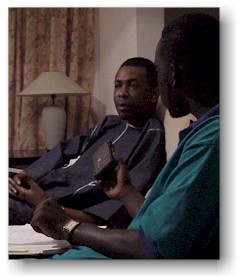
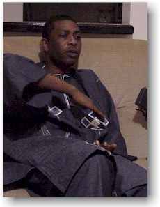
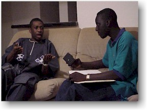
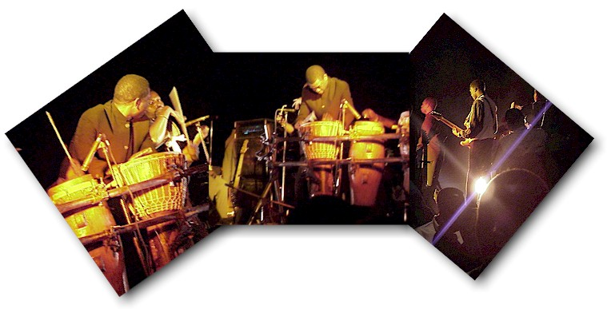

Who's On? (оригинал)
Youssou Ndour, музыкальная сенсация Сенегала, Посол Доброй Воли UNICEF, награжденный золотыми дисками, обычно провозглашаемый Королем Mbalax и иногда африканским Michael Jackson недавно посетил Гамбию, где сыграл ночью в центре музыки и танца TAFBEL Maisonettes. Там Ndour получил возможность дать свое первое сетевое интервью.
Q. Вы несколько раз выступали в Гамбии, продали здесь несколько тысяч альбомов... насколько важен гамбийский рынок для вашей продукции?
Youssou: В определенной степени он очень влиятелен. Если бы мы с групой приезжали сюда каждый раз, когда нас позовут, мы играли бы в Гамбии, по крайней мере, каждый месяц. Но мы стараемся ограничить и контролировать количество наших появлений здесь. Мы не хотим перенасытить рынок. Когда у нас возникает чувство, что требуется определенная раскрутка, тогда мы планируем приехать опять. Это часть маркетинга, особенно, когда выходит новый альбом. Но как я и сказал выше, Гамбия - очень важна для нас сама по себе. Во-первых, потому что прием, который мы получаем в Гамбии, очень уникален. Это не значит, что он скромнее, чем в Сенегале, потому что гамбийцы - потрясающие люди. И, во-вторых, из-за географической близости наших двух стран. Можно провести день в Сенегале, а ночь - уже в Гамбии.
Youssou: В определенной степени он очень влиятелен. Если бы мы с групой приезжали сюда каждый раз, когда нас позовут, мы играли бы в Гамбии, по крайней мере, каждый месяц. Но мы стараемся ограничить и контролировать количество наших появлений здесь. Мы не хотим перенасытить рынок. Когда у нас возникает чувство, что требуется определенная раскрутка, тогда мы планируем приехать опять. Это часть маркетинга, особенно, когда выходит новый альбом. Но как я и сказал выше, Гамбия - очень важна для нас сама по себе. Во-первых, потому что прием, который мы получаем в Гамбии, очень уникален. Это не значит, что он скромнее, чем в Сенегале, потому что гамбийцы - потрясающие люди. И, во-вторых, из-за географической близости наших двух стран. Можно провести день в Сенегале, а ночь - уже в Гамбии.


Q. Помимо выступлений, есть ли у вас друзья в Гамбии?
Youssou: Как и для каждого африканца, это неизбежно. Общность очень важна. Это вероятно отлично от того, если бы я жил в Европе или Америке. Быть там музыкантом такого уровня, как я, значит иметь определенную упаковку и принимать все, что в нее заложено. И нет ничего более важного, чем люди, которых я притягиваю. Это более или менее вопрос культуры. Не имеет значения, насколько кто-то популярен, такая вещь как дружба есть везде.
Фактически, некоторые из моих друзей в Гамбии - очень близки мне. Время от времени я специально приезжаю в Гамбию, чтобы посетить их, и они также приезжают повидаться со мной в Дакар.
Youssou: Как и для каждого африканца, это неизбежно. Общность очень важна. Это вероятно отлично от того, если бы я жил в Европе или Америке. Быть там музыкантом такого уровня, как я, значит иметь определенную упаковку и принимать все, что в нее заложено. И нет ничего более важного, чем люди, которых я притягиваю. Это более или менее вопрос культуры. Не имеет значения, насколько кто-то популярен, такая вещь как дружба есть везде.
Фактически, некоторые из моих друзей в Гамбии - очень близки мне. Время от времени я специально приезжаю в Гамбию, чтобы посетить их, и они также приезжают повидаться со мной в Дакар.
Q. Некоторые из этих отношений настолько устоялись, что имена друзей даже появились в ваших песнях..."Willie do you like football?" "O.B. O.B." и т.д.?
Youssou: И снова, все это часть нашей культуры. Я - griot или guewel, мы - певцы хвалы и пение - это способ показать наше признание. Когда вы благодарите кого-то за то, что он дал или сделал для вас, вы прославляете его пением. Не ради денег или покровительства, но в качестве доброго жеста. Это просто другой способ поблагодарить за дружбу. От этой части нашей культуры нельзя отказаться, потому что это часть нас самих.
Youssou: И снова, все это часть нашей культуры. Я - griot или guewel, мы - певцы хвалы и пение - это способ показать наше признание. Когда вы благодарите кого-то за то, что он дал или сделал для вас, вы прославляете его пением. Не ради денег или покровительства, но в качестве доброго жеста. Это просто другой способ поблагодарить за дружбу. От этой части нашей культуры нельзя отказаться, потому что это часть нас самих.


Q. Вы в первый раз даете подобное ночное гала-представление в Гамбии, что подвигло вас на это?
Youssou: Поскольку мы бываем в Гамбии достаточно часто, мы всегда исследуем возможности расширения индустрии развлечений. Идея пришла во время разговора с нашими хорошими друзьями в Гамбии и я рад, что она оказалась успешна. Мы надеемся, что они нам помогут в ближайшем будущем. Мы всегда ищем чего-то нового. Мы стараемся развлекать людей всех возрастов. Некоторые люди не чувствуют себя комфортно на дискотеках и шоу, вероятно, это было одной из причин, почему к нам пришла такая идея. Музыка не только для молодых, она для любого возраста. Мы стараемся убрать все границы, окружающие музыку, развлечения. Гала-ночь была комбинацией шоу и дискотеки.
Youssou: Поскольку мы бываем в Гамбии достаточно часто, мы всегда исследуем возможности расширения индустрии развлечений. Идея пришла во время разговора с нашими хорошими друзьями в Гамбии и я рад, что она оказалась успешна. Мы надеемся, что они нам помогут в ближайшем будущем. Мы всегда ищем чего-то нового. Мы стараемся развлекать людей всех возрастов. Некоторые люди не чувствуют себя комфортно на дискотеках и шоу, вероятно, это было одной из причин, почему к нам пришла такая идея. Музыка не только для молодых, она для любого возраста. Мы стараемся убрать все границы, окружающие музыку, развлечения. Гала-ночь была комбинацией шоу и дискотеки.
Q. Для большинства гамбийских музыкантов издание музыки всегда большая проблема, потому что у нас нет тиражного производства. Большая часть делается в Сенегале, иногда под маркой вашей записывающей компании XIPPI, нет ли у вас планов расширяться в Гамбии?
Youssou: В настоящее время делается очень много «закулисной работы» в этой области. Я не хочу сейчас публично описывать наши планы, позвольте нам спокойно работать над этим несколько ближайших месяцев.
Youssou: В настоящее время делается очень много «закулисной работы» в этой области. Я не хочу сейчас публично описывать наши планы, позвольте нам спокойно работать над этим несколько ближайших месяцев.


Q. То воздействие, которое оказывает послание, заложенное в ваших песнях, кажется потрясающим. Возьмем, к примеру, Boulen Coupe - кажется она имеет отношение к каждому гамбийцу.
Youssou: Эта песня посвящена серьезным проблемам нехватки ресурсов, которую мы с недавних пор испытываем в Сенегале. Причиной были проблемы между союзами и правительством. Обе партии с большой неохотой были вынуждены признать проблему. Я думаю, что песня была важным инструментом в нахождении правильного решения Этой Проблемы. Так что, если подобная проблема существует в Гамбии, моя песня адресована и вам в равной степени.
Youssou: Эта песня посвящена серьезным проблемам нехватки ресурсов, которую мы с недавних пор испытываем в Сенегале. Причиной были проблемы между союзами и правительством. Обе партии с большой неохотой были вынуждены признать проблему. Я думаю, что песня была важным инструментом в нахождении правильного решения Этой Проблемы. Так что, если подобная проблема существует в Гамбии, моя песня адресована и вам в равной степени.
Q. Вы когда-нибудь боялись запугивания правительства?
Youssou: Это свободный мир. Я до сих пор не испытывал проблем ни с какими авторитетами и надеюсь не столкнуться с этим. Бояться нечего, все, о чем я пою, это реалии жизни. С того момента, как я начал петь, я не испытывал проблем. Я пел только для того, чтобы творить.
Q. Жизнь после Super Etoile... есть определенные планы ?
Youssou: Я еще не думал об этом моменте. До тех пор пока есть вдохновение, я буду продолжать. У меня классная команда и мы будем вместе так долго, как сможем.
Q. Вы выступали дуэтом с Omar Pene, Neneh Cherry, Kinne Laam... нет ли у вас чего-нибудт подобного для наших гамбийских звезд, таких как Elie Nachif, Oussou Senor и других?
Youssou: Я никогда ничего не планирую. Я один из тех людей, которые просто ждут, с чем придет к ним этот день. Так что это может случиться однажды.
Youssou: Это свободный мир. Я до сих пор не испытывал проблем ни с какими авторитетами и надеюсь не столкнуться с этим. Бояться нечего, все, о чем я пою, это реалии жизни. С того момента, как я начал петь, я не испытывал проблем. Я пел только для того, чтобы творить.
Q. Жизнь после Super Etoile... есть определенные планы ?
Youssou: Я еще не думал об этом моменте. До тех пор пока есть вдохновение, я буду продолжать. У меня классная команда и мы будем вместе так долго, как сможем.
Q. Вы выступали дуэтом с Omar Pene, Neneh Cherry, Kinne Laam... нет ли у вас чего-нибудт подобного для наших гамбийских звезд, таких как Elie Nachif, Oussou Senor и других?
Youssou: Я никогда ничего не планирую. Я один из тех людей, которые просто ждут, с чем придет к ним этот день. Так что это может случиться однажды.


Q. Вы всегда добавляете новый аромат в mbalax - либо посредством музыкальных инструментом, либо языка... нет ли у вас страха, что оригинальный mbalax может быть утерян с течением времени?
Youssou: Это никогда не будет утеряно, потому что это часть нас, огромная часть нашей культуры. С помощью разных языков, на которых я пою, это становится проще для понимания других наций. Нам не следует ограничивать красоту mbalax только нашей общиной региона Сенегамбия, мы должны идти вперед без границ.
Q. Что вы думаете послужило успеху Super Etoile?
Youssou: Большая часть заслуг на остальных участниках группы, которые действительно сделали то, что мы имеем сегодня. Каждый из них талантлив в своей собственной области, не исключая Vivienne, единственную женщину в группе.
Youssou: Это никогда не будет утеряно, потому что это часть нас, огромная часть нашей культуры. С помощью разных языков, на которых я пою, это становится проще для понимания других наций. Нам не следует ограничивать красоту mbalax только нашей общиной региона Сенегамбия, мы должны идти вперед без границ.
Q. Что вы думаете послужило успеху Super Etoile?
Youssou: Большая часть заслуг на остальных участниках группы, которые действительно сделали то, что мы имеем сегодня. Каждый из них талантлив в своей собственной области, не исключая Vivienne, единственную женщину в группе.
Q. Хотя вы провели много времени прекрасно в Гамбии, была пара случаев, когда вам приходилось отчитываться перед свитой гамбийского двора.
Youssou: C некоторыми из подобных вещей просто приходится жить, особенно, если вы, подобно мне, часть индустрии. Super Etoile был пару раз преследуем судом. В обоих случаях это произошло из-за наших выступлений. Я могу заверить вас, что мы были оправданы оба раза.
Q. У вас огромное число фанов. Что если бы они попросили вас стать их кандитом в президенты?
Youssou: [смеется] Меня невозможно увлечь, когда речь идет о политике.
Youssou: C некоторыми из подобных вещей просто приходится жить, особенно, если вы, подобно мне, часть индустрии. Super Etoile был пару раз преследуем судом. В обоих случаях это произошло из-за наших выступлений. Я могу заверить вас, что мы были оправданы оба раза.
Q. У вас огромное число фанов. Что если бы они попросили вас стать их кандитом в президенты?
Youssou: [смеется] Меня невозможно увлечь, когда речь идет о политике.

